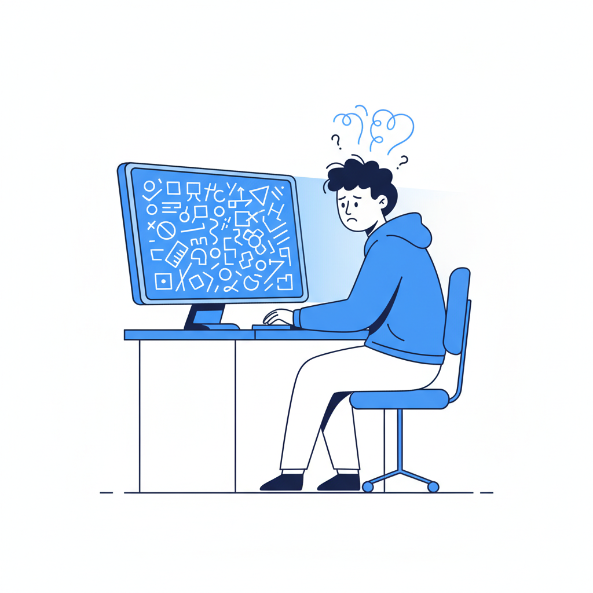

一个被误解的"解放"
Anthropic在2026年初做了一个实验：52名软件工程师被分成两组，学习一个他们都不熟悉的编程库。一组用AI辅助，一组手写。结果，两组完成任务的时间差不多——AI并没有让人快多少。但测试理解力的时候，用AI的那组得分低了17%。
17%听起来不算多。但仔细看数据就发现，降幅最大的不是"能不能写出来"，而是"出了问题能不能找到原因"。换句话说，调试能力受损最严重。
这不是个别现象。VentureBeat的调查显示，43%的AI生成代码在通过了所有测试之后，到了生产环境还是需要人工调试。Georgia Tech的追踪数据更刺眼：2026年3月，单月有35个安全漏洞（CVE）被确认是AI生成的代码直接导致的——1月份这个数字还只有6个。
2026年3月还发生了一件事：一个风头正劲的AI平台泄露了150万个API密钥。原因是创始人用vibe coding写了整个后端，没做安全审查。不是他不想做，是他看不懂AI写的代码，不知道该查什么。
当然你可以说，这些都是早期问题，AI会越来越好，bug会越来越少。但问题不在bug多不多。问题在于：当bug真的出现的时候，还有没有人能找到它。

调试不是修Bug，是一种认知方式
说"调试能力下降"，很多人的第一反应是：那不好吗？调试本来就是苦活，能省掉当然好。
这种想法有道理。但它建立在一个假设上：调试只是"修东西"。
其实调试是一种理解方式。当你调试一段代码的时候，你在做的事情是：把一个复杂的、不透明的系统一层一层拆开，找到它失败的那个精确位置，然后理解为什么它在那里失败。这个过程迫使你建立起对整个系统的心智模型。
不只是程序员这样。医生面对一个症状含混的病人，排除一个又一个可能性，最后锁定病因——这是调试。律师面对一个复杂案件，拆解每一条证据链，找到逻辑断裂的地方——这也是调试。汽车工程师听到一个异响，沿着传动系统一个零件一个零件排查——还是调试。
说到底，调试就是"通过拆解来理解"。它是人类面对复杂系统时最基本的认知策略。
Anthropic的那个实验还有一个细节值得注意：那些用AI写代码但把AI当"提问对象"（问它为什么这样写、这段代码的逻辑是什么）的开发者，理解力测试得分超过65%。而那些直接让AI生成代码、自己不看的开发者，得分低于40%。
差别不在于用不用AI，在于你有没有经历那个"拆开来看"的过程。
有人会说，这不就是工具进步的正常代价吗？我们从汇编语言升级到Python，也失去了对内存管理的细粒度控制，但没人觉得这是退步。
这个类比有一个关键的区别。从汇编到C，从C到Python，每一次升级，程序员对自己在做什么的理解都变得更清晰了——你可以用更接近人类思维的方式表达意图。但vibe coding是反过来的。它是历史上第一次，工具升级之后，使用者对自己在做什么变得更不理解了。Karpathy自己的描述是："忘掉代码的存在。"这不是从低级语言到高级语言的进步，这是从"我理解我在做什么"到"我不需要理解我在做什么"的跃迁。
一种看不见的负债
2026年3月，Google工程师Addy Osmani写了一篇文章，提出了一个概念叫"理解力负债"（comprehension debt）。他说的是：一个团队的代码库在膨胀，但团队中真正理解这些代码的人在减少。两条曲线，一条向上，一条向下，中间的缺口就是理解力负债。
这个概念击中了一个要害：理解力负债和技术债务不一样，技术债务你看得见——构建变慢，依赖混乱，改一个地方崩三个地方。但理解力负债是隐形的。你的所有指标看起来都很好。开发速度在提升，代码覆盖率是绿的，PR数量在涨，DORA指标稳定。没有任何一个常用的工程指标在衡量"团队中有多少人真正理解这些代码是怎么工作的"。
数据支持这个判断。研究显示，vibe coding项目的技术债务累积速度是传统项目的3倍——不是因为代码看起来有问题，而是因为缺乏文档、缺乏测试覆盖、缺乏那种"一个人想清楚了整个系统再写"的架构连贯性。代码重复率增加了8倍。88%的受访公司承认，"可靠性税"——也就是调试、验证、排查环境问题——已经吞掉了开发者每周26%到50%的时间。
讽刺的地方在于：vibe coding本来是为了省时间的。
当代码审查也开始由AI完成、测试也由AI生成、部署也由AI管理的时候，"更好的流程"这个解决方案本身就失效了。因为所有流程中的"理解"环节都被自动化了。系统可以自运行，但没有任何一个人类节点真正知道它在做什么。
这不是科幻。这是很多团队2026年的日常。
微波炉坏了
我妈用微波炉用了二十年。她不知道磁控管是什么，不知道微波怎么加热食物，不知道为什么金属不能放进去（虽然她试过）。这完全没有影响她每天用微波炉热剩饭。
但如果有一天，全世界所有人都像我妈一样使用微波炉，而且制造微波炉的人也是用AI设计的、自己也不完全理解——那微波炉坏了，谁来修？
代码基础设施的情况比微波炉严重得多。你的银行APP、你的导航系统、你的医疗记录、你手机上每一个你依赖的东西，底层都是代码。当这些代码越来越多地由AI编写，而理解这些代码的人越来越少——不是因为代码太复杂（以前也复杂），而是因为没人费心去理解了——我们就在积累一种非常特殊的脆弱性。
不是系统不工作的脆弱性。系统工作得很好。是系统一旦出现从未见过的故障，没人知道怎么办的脆弱性。
这篇文章不是在说不要用AI写代码。2026年了，不用AI写代码就像不用计算器做算术一样不切实际。但有一件事值得有意识地做：保留"拆开来看"的习惯。不是每次都看，但不能完全不看。用AI写完之后，偶尔问一句"这段为什么这样写"。遇到bug的时候，在让AI修之前，先自己想三分钟它可能出在哪里。
Anthropic的数据已经说得很清楚了：把AI当提问对象的人，理解力几乎不受影响。把AI当代写工具的人，理解力断崖式下降。差别就在于那三分钟。
调试从来不是苦活。它是你理解这个世界的方式。只不过以前没人告诉你，因为以前没有别的选择。现在有了别的选择，你才需要主动选它。